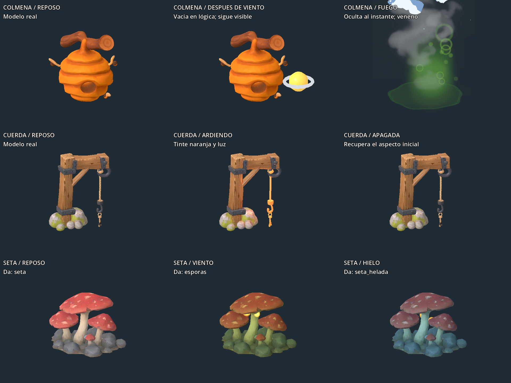

24/11/2026. Revisión del código, cuatro baterías de pruebas y nueve capturas con los modelos instalados. Este lote audita: no cambia reglas, recursos ni asignaciones de los mapas.
Actualización posterior: colmena y cuerda corregidas en su lote aplicado; las reacciones y la cadena resonante de las setas están conectadas en el lote de setas. Los hallazgos y capturas siguientes conservan la auditoría anterior a esas correcciones.
Resultado: 251 comprobaciones existentes pasan, sin errores de script. La inspección adicional reproduce una colmena vacía que mantiene el aspecto lleno y una discrepancia entre datos y ejecución de la seta resonante. Las mejoras visuales más claras son cuerda ardiendo, colmena y transformaciones de plantas.

| Prioridad / objeto | Hallazgo | Qué haría |
|---|---|---|
| Alta · colmena + viento | Reproducido con el modelo real. Entrega 1–2 panales y estado vacia, pero la representación sigue idéntica. _dejar_vacia busca una hija directa panal que no existe en el asset instalado. Al simular el nacimiento ya usada aplica escala 0,6 al modelo completo: dos representaciones diferentes del mismo estado. | Representar lleno y vacío con un contrato visual estable; animar el desprendimiento del panal y conservar el soporte. Reutilizarlo al recargar. Añadir prueba que verifique el visual real además del estado lógico. Puede requerir separar panal y rama del GLB si se busca caída articulada; no hace falta rehacer su textura. |
| Alta · seta resonante | Reproducido. Pulso madura una seta base a seta_resonante; después spell_reacts devuelve false con viento e hielo. PLANTAS no contiene una tabla resonante. fuentes.tsv declara esporas_luminosas y seta_cristalizada, pero la construcción de plantas filtra por PIEZAS_PLANTA y el recolectable solo admite el objeto base de su planta. El comentario del controlador describe deliberadamente una única transformación: hay una discrepancia de diseño/datos. | Resolver el contrato: permitir pulso → viento/hielo y conectar los datos, o retirar esas dos filas si se mantiene una sola transformación. No cambiarlo silenciosamente como una mejora gráfica. Todo por código/datos. |
| Media · cuerda + fuego | Capturado. La cuerda emite color naranja y luz, y termina rota; no tiene frente de brasa, fibras consumidas ni llamas de superficie. Al apagar vuelve al aspecto inicial. | Adaptar CombustionObjeto3D solo a los tramos de cuerda. Conservar poste y herrajes, T_ARDE, escarcha, señal rota y liberación del soporte. Frente longitudinal y pocas chispas. Por código. |
| Media · colmena + fuego | Capturado. Oculta el modelo inmediatamente y crea la nube venenosa. Se lee como desaparición seguida de veneno, con poca continuidad visual del material que arde. | Carbonización breve de la cera y desprendimiento de restos mientras la nube cumple sus tiempos actuales. Mantener la pérdida del panal y la persistencia de la flag. Código; separación de soporte opcional para una caída más precisa. |
| Media · plantas + viento/hielo/agua/rayo | Viento e hielo capturados; implementación inspeccionada. La transformación cambia el ingrediente y tiñe el mismo modelo; todas las vías lanzan oro_motas y sello_ok. El viento da esporas pero la seta conserva su forma completa. | Una reacción corta por material: contracción y nube de esporas; cristalización de superficie; gotas y brillo mojado; chispas localizadas. Mantener el ingrediente resultante. Código y shaders. |
| Media · cristal cargado con rayo | Inspección de código; sin captura específica. Conserva cargado_s durante 20 s; la presentación depende principalmente del destello corto. _pintar no usa cargado_s para mantener una señal de carga. | Pequeñas descargas y respiración luminosa mientras quede carga, con cierre visible al agotarse. No añadir una luz extra por cristal: reutilizar emisión y el cupo actual. |
| Baja · nido + viento | Contrato probado. Da pluma con espera; durante la espera sigue admitiendo viento y ejecutando la misma sacudida, aunque no dé recurso. El código permite tweens de sacudida simultáneos; su efecto bajo golpes rápidos no se ha capturado. | Distinguir la caída real de plumas de una sacudida sin recurso y cancelar o retomar la animación anterior. No confundir este comportamiento con un fallo del contador. |
| Diseño · cajas y jarrones | Contrato probado e inspeccionado. Cualquier hechizo, incluidos agua y viento, rompe el objeto. No es una caja física mojable por defecto. | Conservar la familia rompible y crear una variante de puzle si se quiere empuje, humedad o flotación. No cambiar el contrato global al retocar su aspecto. |
| Sin fallo detectado · cuenco, hielo, humedad, flotación y barril de pólvora | Pruebas de rellenado/vapor, congelado/descongelado, conducción, escarcha, flotación y explosión con cadena, daños y aviso pasan. | Conservar estos contratos. No se ha evaluado toda su presentación en partida, ni todas las combinaciones simultáneas posibles. |
| Batería | Comprobaciones OK | Fallos |
|---|---|---|
| prueba_reacciones_entorno_objetos | 107 | 0 |
| prueba_materia_reactivos_3 | 54 | 0 |
| prueba_flotador | 14 | 0 |
| prueba_barril_explosion · escenario real | 76 | 0 |
Logs completos en output/revision_interacciones_2026-11-24/. Las advertencias de PlayLog por user:// sin permiso de escritura no son errores de script. El escenario de explosión termina con FALLOS: 0. Las comprobaciones no garantizan que los estados se lean visualmente; de ahí los hallazgos adicionales.
Reproducciones: evidencias.json. Colmena: estado vacia, botín panal, hijo_panal false, modelo_igual true; nacimiento vacía simulado con _dejar_vacia(false), escala (0.6,0.6,0.6). Seta: objeto seta_resonante tras pulso real, ambas reacciones false y tabla_resonante vacía.
Capturador y sonda: output/revision_interacciones_2026-11-24/captura_revision.gd. Capturas Forward+ con cámara y luz constantes por fila; cuerda congelada en estado ardiendo para fotografiarlo. El entorno de captura no tiene la suscripción de reacciones de una partida: las conclusiones sobre partículas se acotan a los controladores y a lo observado en laboratorio. No se escriben flags de nivel ni cambios de inventario persistentes. Sin commit.
Siguiente lote recomendado: corregir el visual vacío de la colmena y adaptar la combustión a la cuerda; después diferenciar las transformaciones de plantas. La cadena de la seta resonante requiere resolver primero la discrepancia de diseño.